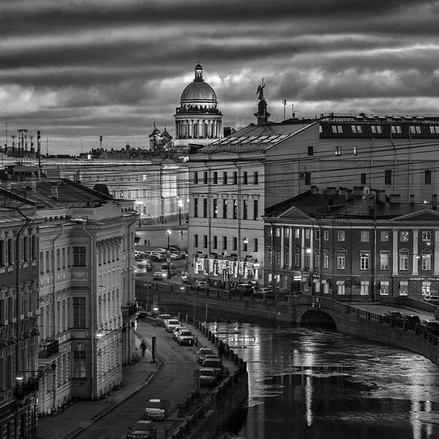
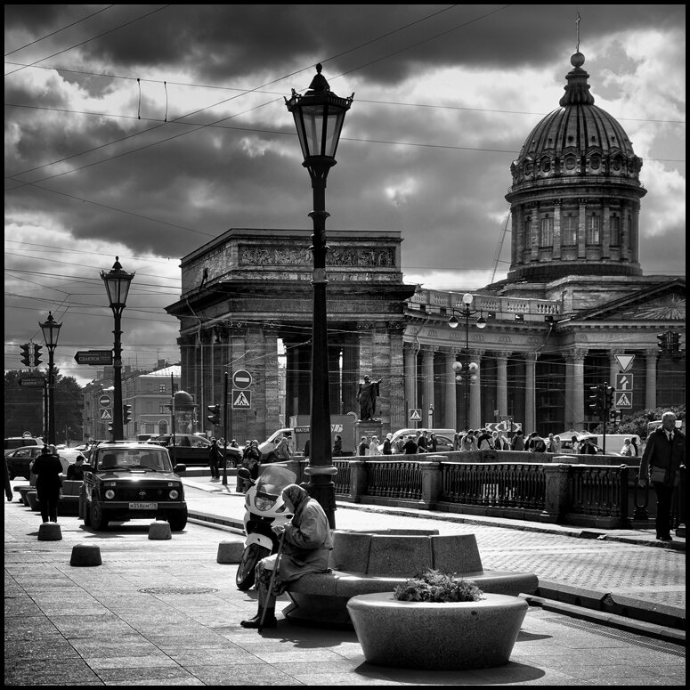

Санкт-Петербург был основан по приказу российского императора Петра I 16 мая 1703 года. В течение первых десяти лет своего существования город имел значение, прежде всего, как крепость и морской порт, но благодаря оживленной торговле он достаточно быстро превратился в богатый экономический центр с развитой промышленностью и ремеслами. В это время была основана знаменитая Александро-Невская Лавра, и город на Неве стал общепризнанным религиозным центром. В 1710 году царская семья решает переехать сюда из Москвы, а также возвести на берегах Невы царский дворец и правительственные корпуса. Так Санкт-Петербург стал столицей Российской империи. Во время короткого периода правления Петра II (1727–1730 гг.) столица была вновь перенесена в Москву, но уже через три года Санкт-Петербург вновь обрел статус главного города России

Младшая дочь Петра I Елизавета продолжила начинания отца. Во времена ее правления большая часть деревянных построек была снесена, и на их месте возникли каменные здания. Именно благодаря Елизавете I город стал живым воплощением творческого гения Бартоломео Растрелли. В городе были воздвигнуты величественные дворцы и соборы, которые и сегодня, два с половиной века спустя, принадлежат к числу главных архитектурных памятников Санкт-Петербурга. Зимний дворец, Большой дворец в Царском селе, Смольный собор и женский монастырь были заложены именно в это время. Императрица была покровительницей наук и искусств, и во время ее правления было основано два крупнейших университета – Московский университет и Российская академия художеств. Великий ученый, писатель и энциклопедист Михаил Васильевич Ломоносов во многом обязан своим успехом Елизавете I.